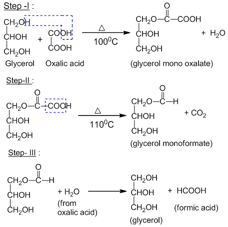
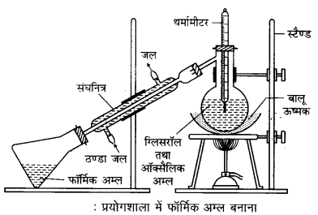
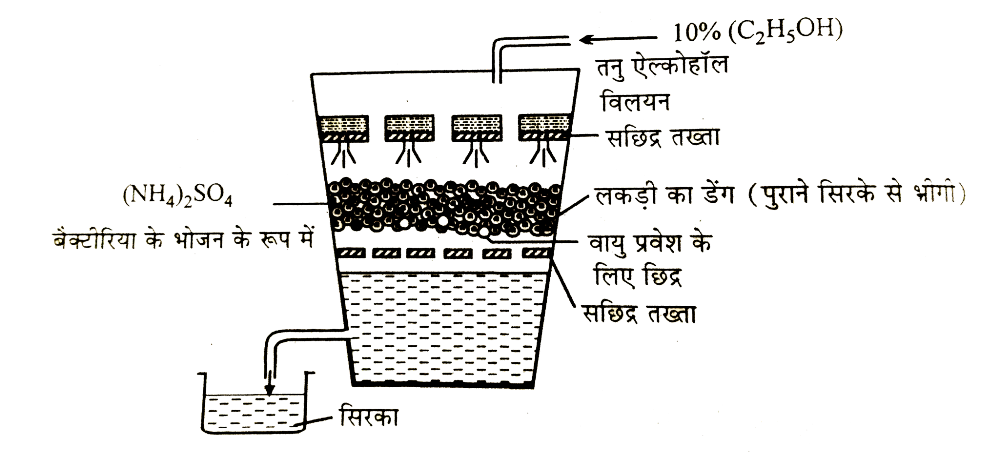

(–COOH) समूह को कार्बोक्सिलिक समूह कहते हैं।
वे कार्बनिक यौगिक जिनमें (–COOH) समूह होता है, कार्बोक्सिलिक अम्ल कहलाते हैं। इन यौगिकों में अम्लों के गुण विद्यमान होते हैं।
कार्बोक्सिलिक अम्ल दो प्रकार के होते हैं।
1. ऐलिफैटिक अम्ल
इनमें –COOH समूह ऐल्किल (R) समूह से जुड़ा रहता है। जैसे —
2. ऐरोमैटिक अम्ल
इनमें –COOH समूह ऐरिल (Ar) समूह से जुड़ा रहता है। जैसे —
ऐलिफैटिक मोनोकार्बोक्सिलिक अम्लों को वसा अम्ल कहते हैं।
वसा से प्राप्त होने वाले उच्चतर अम्ल, जैसे स्टिऐरिक और पामिटिक अम्ल आदि में केवल एक कार्बोक्सिलिक समूह ही पाया जाता है, इसलिए सभी मोनोकार्बोक्सिलिक अम्लों को सामूहिक रूप से वसा अम्ल कहा जाता है।
1. सामान्य नाम पद्धति में
इस पद्धति के अनुसार मुख्य नाम के अन्त में 'इक' लगाते हैं और फिर 'अम्ल' शब्द का प्रयोग करते हैं। प्रथम चार सदस्यों के नाम उनके स्रोतों के नाम के आधार पर रखे गये हैं जिनसे ये प्राप्त किये गये थे। जैसे —
2. IUPAC नामकरण में
IUPAC नामकरण में निम्नलिखित चरण अपनाए जाते हैं —
उदाहरण:
मोनोकार्बोक्सिलिक अम्लों में निम्न प्रकार की समावयवता पाई जाती है।
1. श्रृंखला समावयवता
जब एक ही आणविक सूत्र वाले मोनोकार्बोक्सिलिक अम्ल विभिन्न प्रकार की कार्बन श्रृंखलाओं में (सीधी या शाखायुक्त) उपस्थित हों तो इसे श्रृंखला समावयवता कहते हैं। उदाहरण —
2. क्रियात्मक समावयवता
जब एक ही आणविक सूत्र के यौगिक अलग-अलग क्रियात्मक समूह प्रदर्शित करते हैं तो इसे क्रियात्मक समावयवता कहते हैं। उदाहरण —
मोनोकार्बोक्सिलिक अम्ल बनाने की सामान्य विधियाँ निम्न हैं।
1. ऐल्कोहॉलों के अम्लीय KMnO₄ द्वारा ऑक्सीकरण से
2. एल्डिहाइड के अम्लीय KMnO₄ द्वारा ऑक्सीकरण से
3. ऐल्किल सायनाइडों के जल-अपघटन से
ऐल्किल सायनाइडों का तनु अम्ल अथवा क्षारों द्वारा जल-अपघटन करने पर वसा अम्ल प्राप्त होते हैं।
4. एस्टर के जल-अपघटन से
एस्टर को खनिज अम्ल या क्षार के साथ गरम करने पर वसा अम्ल प्राप्त होते हैं।
5. अम्ल ऐमाइडों पर नाइट्रस अम्ल की क्रिया से
6. अम्ल ऐमाइडों के क्षार अथवा खनिज अम्लों द्वारा जल-अपघटन से
मोनोकार्बोक्सिलिक अम्लों के भौतिक गुण निम्न हैं।
1. अवस्था एवं गंध
2. विलेयता
3. क्वथनांक
मोनोकार्बोक्सिलिक अम्लों का क्वथनांक समान आणविक भार वाले अन्य यौगिकों (जैसे एल्डिहाइड, कीटोन और अल्कोहल) की तुलना में अधिक होता है।
कार्बोक्सिलिक अम्ल हाइड्रोजन आबंधों के कारण द्विलक (dimer) बनाते हैं, जिससे अणुओं को अलग करने के लिए अधिक ऊर्जा की आवश्यकता होती है।
इस कारण मोनोकार्बोक्सिलिक अम्लों का क्वथनांक समान आणविक भार वाले अन्य यौगिकों जैसे एल्डिहाइड, कीटोन और अल्कोहल की तुलना में अधिक होता है।
एसिटिक अम्ल में मेथिल समूह के धनात्मक प्रेरणिक प्रभाव (+I प्रभाव) के कारण, O–H बंध का इलेक्ट्रॉन घनत्व बढ़ जाता है, जिससे H+ आयन का निकलना मुश्किल हो जाता है।
इसके विपरीत, फॉर्मिक अम्ल में यह प्रभाव अनुपस्थित होने के कारण, यह आसानी से आयनित हो जाता है। अतः एसिटिक अम्ल, फॉर्मिक अम्ल से दुर्बल होता है।
क्लोरोएसिटिक अम्ल में उपस्थित क्लोरीन परमाणु का प्रबल ऋणात्मक प्रेरणिक प्रभाव (–I) होता है। इसके कारण, O–H बंध के इलेक्ट्रॉन आसानी से ऑक्सीजन की ओर विस्थापित हो जाते हैं और H+ आसानी से मुक्त हो जाता है। CH3COOH में उपस्थित CH3 समूह जो (+I) प्रभाव उत्पन्न करता है, अम्लीय प्रकृति में कमी लाता है।
फॉर्मिक अम्ल में ऐसा कोई समूह नहीं है जो (+I) या (–I) प्रभाव उत्पन्न करता हो। अतः फॉर्मिक अम्ल एसिटिक अम्ल से अधिक प्रबल होता है और क्लोरोएसिटिक अम्ल एसिटिक अम्ल से अधिक प्रबल होता है। संक्षेप में, क्लोरोएसिटिक अम्ल फॉर्मिक अम्ल से अधिक प्रबल होता है और फॉर्मिक अम्ल एसिटिक अम्ल से अधिक प्रबल होता है।
अम्लीय शक्ति क्रम:
मोनोकार्बोक्सिलिक अम्लों के रासायनिक गुण निम्न हैं।
(I) ऐल्किल समूह में प्रतिस्थापन
हेल-वोलहार्ड-ज़ेलिंस्की अभिक्रिया (HVZ): जब कार्बोक्सिलिक अम्ल को फॉस्फोरस की उपस्थिति में Cl₂ या Br₂ के साथ अभिक्रिया कराया जाता है, तो अल्फा-हैलोजेनेटेड कार्बोक्सिलिक अम्ल बनता है। इसे हेल-वोलहार्ड-ज़ेलिंस्की अभिक्रिया (HVZ) कहते हैं।
(II) –COOH समूह के कारण अभिक्रियाएँ
(A) वे अभिक्रियाएँ जिनमें –COO–H बंध टूटता है (लवणों का बनना): वसा अम्ल जल में घुलकर हाइड्रोजन आयन देते हैं इसलिए ये धातुओं, क्षार और धात्विक कार्बोनेटों के साथ लवण बनाते हैं। जैसे —
1. जिंक के साथ क्रिया — जिंक एसिटेट बनता है।
2. NaOH के साथ क्रिया — सोडियम एसिटेट बनता है।
3. Na₂CO₃ के साथ क्रिया — सोडियम एसिटेट बनता है।
(B) वे अभिक्रियाएँ जिनमें –CO–OH बंध टूटता है:
1. ऐल्कोहॉल के साथ क्रिया (एस्टरीकरण) — ऐल्कोहॉलों के साथ सान्द्र H₂SO₄ या शुष्क HCl जैसे निर्जलीकारकों की उपस्थिति में गरम करने पर एस्टर बनते हैं।
2. फॉस्फोरस ट्राइक्लोराइड के साथ क्रिया — एसिड क्लोराइड बनते हैं।
3. फॉस्फोरस पेण्टाक्लोराइड के साथ क्रिया — एसिड क्लोराइड बनते हैं।
4. थायोनिल क्लोराइड के साथ क्रिया — एसिड क्लोराइड बनते हैं।
5. अमोनिया की क्रिया — अमोनियम लवण बनते हैं जो गरम किये जाने पर ऐमाइड देते हैं।
6. निर्जलीकरण — जब वसा अम्लों को अकेले अथवा निर्जलीकारकों जैसे फॉस्फोरस पेण्टा-ऑक्साइड के साथ गरम किया जाता है, तब जल का एक अणु निकल जाता है और ऐनहाइड्राइड बनते हैं।
(C) वे अभिक्रियाएँ जिनमें सम्पूर्ण COOH समूह भाग लेता है:
1. विकार्बोक्सिलीकरण — जब वसा अम्लों के निर्जल सोडियम लवण को सोडा लाइम के साथ गरम किया जाता है तब ऐल्केन बनते हैं।
2. कोल्बे अभिक्रिया — वसा अम्लों के सोडियम या पोटैशियम लवणों के जलीय विलयन का विद्युत-अपघटन करने पर ऐल्केन बनते हैं।
3. श्मिट अभिक्रिया — जब अक्रिय विलायक जैसे CHCl₃ में घुले हुए हाइड्रेजोइक अम्ल की वसा अम्लों पर सल्फ्यूरिक अम्ल की उपस्थिति में 50–55°C पर क्रिया होती है तब प्राथमिक ऐमीन बनते हैं।
4. वसा अम्लों की वाष्प को गरम MnO पर 300°C पर प्रवाहित करने पर — ऐल्डिहाइड तथा कीटोन प्राप्त होते हैं।
5. वसा अम्ल के कैल्सियम लवण का शुष्क आसवन — जब यह किया जाता है तब ऐल्डिहाइड तथा कीटोन प्राप्त होते हैं।
6. अपचयन — वसा अम्ल लिथियम एल्युमिनियम हाइड्राइड की उपस्थिति में अपचयित होकर एल्कोहल बनाते हैं।
7. फॉर्मिक अम्ल का ऊष्मीय अपघटन — जब फॉर्मिक एसिड को 160°C तक गर्म किया जाता है तो यह CO और H₂O में वियोजित हो जाता है।
1. फार्मिक अम्ल से एसिटिक अम्ल
2. एसिटिक अम्ल से फार्मिक अम्ल
कार्बोक्सिलिक अम्ल का C=O समूह अनुनाद (resonance) में शामिल होता है। अतः यह स्थायी होता है, जिसके कारण यह कोई योगात्मक अभिक्रिया नहीं देता।
कार्बोक्सिलिक अम्ल के उपयोग निम्न हैं।
प्रयोगशाला में फॉर्मिक अम्ल, ऑक्सैलिक अम्ल तथा निर्जल ग्लिसरॉल के मिश्रण को 100–110°C ताप पर गर्म करके बनाया जाता है। यह अभिक्रिया तीन चरणों में होती है —

अंतिम चरण में ग्लिसरॉल मोनोफॉर्मेट जल-अपघटित होकर ग्लिसरॉल (जो पुनः चक्र में प्रयुक्त होता है) तथा फॉर्मिक अम्ल देता है।
उपकरण चित्र:

फार्मिक अम्ल के भौतिक गुण निम्न हैं।
फार्मिक अम्ल के उपयोग निम्न हैं।
(स्रोत में इस प्रश्न की सूची केवल इन्हीं दो बिंदुओं तक सीमित थी; प्रतीत होता है कि सूची अपूर्ण/संक्षिप्त छोड़ी गई है, अतः अतिरिक्त उपयोग यहाँ नहीं जोड़े गए हैं।)
ऐसीटिक अम्ल का 6–10% तनु विलयन सिरका कहलाता है। इसमें ऐसीटिक अम्ल के अतिरिक्त कुछ कार्बनिक अम्ल, एस्टर तथा रंगीन पदार्थ भी थोड़ी मात्रा में उपस्थित होते हैं।
उपयोग — सिरके का उपयोग अचार तथा सफेदा बनाने में बहुत होता है।
सिरका साधारणतया गन्ने के रस अथवा ऐल्कोहॉल से किण्वन द्वारा प्राप्त किया जाता है। इस विधि को शीघ्र सिरका विधि कहते हैं।
जटिल कार्बनिक पदार्थ को सूक्ष्मजीव जैसे बैक्टीरिया और यीस्ट के द्वारा सरल कार्बनिक पदार्थ में बदलने की प्रक्रिया किण्वन कहलाती है।
शीघ्र सिरका विधि — यह एसिटिक अम्ल के औद्योगिक उत्पादन की एक विधि है।
सिद्धांत: इस विधि में एथिल अल्कोहल से माइकोडर्मा ऐसीटी बैक्टीरिया द्वारा किण्वन प्रक्रिया से एसिटिक अम्ल (सिरके का मुख्य घटक) प्राप्त किया जाता है।
रासायनिक समीकरण:
उपकरण: इस प्रक्रिया में एक बड़ा लकड़ी का बर्तन उपयोग किया जाता है, जिसमें बीच में लकड़ी की छीलन भरी होती है। इन छीलनों को पुराने सिरके में भिगोया जाता है ताकि इनमें माइकोडर्मा ऐसीटी बैक्टीरिया आ जाएँ। बर्तन के ऊपरी हिस्से में एक छिद्रित तख्ता होता है और नीचे की तरफ एक झूठा छिद्रित तल होता है। हवा को बर्तन के निचले हिस्से में बने छेदों से प्रवेश करने दिया जाता है।

विधि: एथेनॉल का तनु घोल (10–12%) धीरे-धीरे बर्तन के ऊपरी हिस्से से नीचे टपकाया जाता है। जब एथेनॉल का घोल बीच की लकड़ी की छीलन से होकर गुजरता है, तो यह माइकोडर्मा ऐसीटी बैक्टीरिया और नीचे से आ रही हवा के संपर्क में आता है। जीवाणु एथेनॉल को ऑक्सीकृत करके एसिटिक अम्ल बनाते हैं। अंतिम उत्पाद, सिरका, बर्तन के नीचे से एकत्रित कर लिया जाता है।
सावधानियाँ:
शुद्ध (निर्जल) एसिटिक अम्ल को ग्लैशल ऐसीटिक अम्ल कहते हैं।
एसिटिक अम्ल के भौतिक गुण निम्न हैं।
एसिटिक अम्ल के उपयोग निम्न हैं।
| क्र.सं. | गुण | फार्मिक अम्ल | एसिटिक अम्ल |
|---|---|---|---|
| 1 | गंध | तीव्र, चुभने वाली गंध होती है | सिरके जैसी (तीखी) गंध होती है |
| 2 | क्वथनांक | क्वथनांक लगभग 100°C | क्वथनांक लगभग 118°C |
| 3 | अम्लीयता | अधिक प्रबल अम्ल | अपेक्षाकृत कमजोर अम्ल |
| 4 | टॉलेंस अभिकर्मक से क्रिया | यह टॉलेंस अभिकर्मक को रजत दर्पण में अवक्षेपित करता है। | एसीटिक अम्ल टॉलेंस अभिकर्मक को अवक्षेपित नहीं करता है। |
उत्तर:
1. सबसे अधिक अम्लीय कौन है?
2. निम्न में सबसे अधिक अम्लीय कौन है?
3. कौन-सा यौगिक HgCl₂ से सफेद अवक्षेप देता है?
4. अम्लीयता का सही क्रम बताइए।